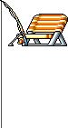

Fishing: AFK Progression
- Fishing Chair and bait are available through the relevant server shop.
- Use
@fishinglistto inspect the reward pool. - Unique KaiokenMS items can be obtained.
- All seven Dragon Balls can be obtained through Fishing, including #7.